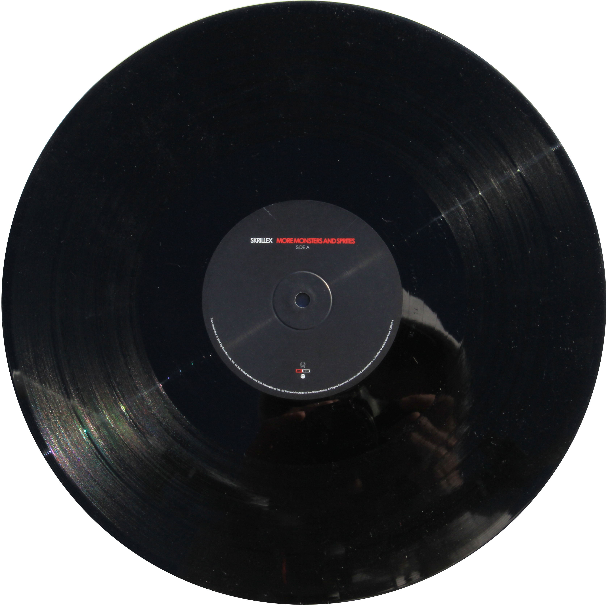

More Scary Monsters and Sprites holds a close place to my heart since Skrillex was the first Dubstep / EDM artist that I began listening to. The Album released in 2010 and showcased a heavy, chaotic, hostile sound that hits the listener in the chest. The Mixture of Skrillex’s technological sound mixed with his background in rock and emo music, he managed to create a new scene that went harder than ever before. The music offers head banging, whiplashing noises. Scary Monsters and Nice Sprites served as a big influence on genres today such as riddim which is another heavy head banging form of bass music. Artists like Dubloadz and Sullivan King have adopted similar techniques due to early dubstep influences such as Skrillex that involve a mesh of technological,machine-like bass with heavy metal instrumentals. The mixing of these genres provide a very dark, horror driven theme to the music. I have always appreciated electronic music of all genres because of their use of abstract graphic designs that sometimes depict mind bending visuals.
 This album consists of the greatest hits of Tom Petty and the HeartBreakers. The band was first formed in 1976 and was inducted into the Rock and Roll Hall of Fame in 2002. Tom Petty and the Heartbreakers Greatest Hits album includes 18 tracks of which some of my favorites are “Mary Jane's Last Dance, Don’t Do Me Like That, You got lucky, and Breakdown”. Like many of the bands I listen to this band was also one that I started listening to in my early years because of my moms influence. The Greatest Hits album accumulated a 12x Platinum award for its popularity. This records cover art includes the band pictured with a fisheye lens with bright gold and red text. On the backside of the record, the black and white picture of the band helps to laminate the bright gold text which describes the song titles.

Green Day released Dookie in 1994 which was received pretty well by the population and scene. Dookie brings a loud, chaotic, angsty punk sound that is driven by a fast pace. Some of my favorites from the album include Longview, Chump, Welcome to Paradise, Basket Case, F.O.D. and She. The song Basket Case is inspired by the singers experiences with anxiety attacks and dealing his emotions he had prior to being diagnosed with a mental disorder Dookie itself has been one of the reasons punk had been brought into the mainstream and it can be seen today through their continuous playing as a band and releasing of albums to this day that now my fourteen year old sister rocks too. The album art is cluttered and depicts a monkey holding poop with the caption “ Throw?” as well as broken houses, people purging and in the center surrounding the title “Green Day” is a mushroom cloud of smoke from an explosion. All of these depictions really speak to the chaotic, edgy, punk sound that Green Day was giving off at the time, I remember having a poster up in my room with all the band members on it and singing the words to the first song I ever learned in first grade which was Boulevard of Broken Dreams by Green Day. It is funny thinking about how I used to sing these songs as a kid with little knowledge about the experiences or emotions that these songs were talking about. It had been my childhood dream to see them but they had never come to Milwaukee that I had known of. This year 2021 I was supposed to see Green Day on the Hella Mega Tour with Weezer and Fall Out Boy but instead of going I had to work at Zumiez because they didn’t schedule me off. I'll catch them next time.


The Foo Fighters formed in Seattle, Washington, 1994 as a new project for Dave Grohl. Currently in 2021, the band's members consist of Dave Grohl, Nate Mendel, Pat Smear, Taylor Hawkins, Chris Shiflett and Rami Jaffee. Since 1994 the band has gone on to produce a number of hits such as “Everlong” which has become a 2x Platinum record. This record includes 16 of the most popular songs. Criticism has come from the band members who stated that it would have made more sense for the Greatest Hits album to come out after the band had retired as opposed to while they are still active. This statement makes sense considering the Greatest Hits album was released in 2009 and they are still releasing music and touring today. The song “The Pretender” is about speaking to the people who have been misled and lied to, the people who have been screwed over. The song hints at the political unrest of the time but Grohl has mentioned that he wants others to interpret the meanings of his lyrics and resonate with whatever he may be expressing. The song “My Hero” on the album reached number six on the US Alternative Songs Billboard chart. The song was written about everyday heroes like the people in our community. I related to this as a young teenager because I never idolized famous people or had someone I looked up to besides the people I could see who did right around me and who really did things in my life. People such as my father and mother, my great grandpa, the teachers and parents of my friends who I looked up to.


Morning Views was released in 2001 and went double platinum. The alternative rock album includes popular singles such as “Wish You Were Here”, “Nice to Know you”, “Warning”, “Are You In?”, and “Circles”. The album is filled with chill alternative songs that entice deep thought and leave you hanging on each lyric. The song “Wish You Were Here” is about the artist's acknowledgment of the brief fleeting moments in one's life and how sometimes in those moments we wish we had someone who would tell us “I love you” and that in those times we wish we had someone to share it with. Personally, this song reminds me of my late grandfather who I was close to. One thing this album does a good job at conveying is that we must live in the present and not the past or future. The album art on the outside of it includes photography. On the cover of the album is a picture of Malibu's shoreline with waves gently crashing against the shore. The backside of the album includes a list of the songs on the record with a photograph of the band members looking out at the ocean. This entire album makes me feel like I’m back in Hawaii cruising, hiking, surfing and enjoying island life. The art on the record itself includes a print of a koi fish that Brandon Boyd the singer of the band drew. The inside of the album includes the lyrics to the songs with pictures of the band members during the recording process in Malibu California.


Meteora was released by Linkin Park in 2003. It is safe to say that linkin park is one of the most influential and popular nu metal / alternative bands of the 21st century with around 16 million copies being sold. The themes and emotions behind the album include feelings of frustration, anger, recovery, as well as a variety of other emotions. Singer Chester Bennington said “ We don’t talk about situations, we talk about the emotions behind the situations. Mike and I are two different people, so we can't sing about the same things, but we both know about similar feelings and situations and can relate on some level.” Meteora captures these emotions perfectly with hard hitting sounds with emotionally driven lyrics. Singles from the album include “Somewhere I Belong”, “Faint”, “Numb”, “From the Inside” and “Breaking the Habit”. The track “Breaking the Habit” is a track that talks about substance abuse, particularly Mike Shinoda’s friend. This song carries very deep cut emotions that weren’t expressible for years of Mike Shinoda’s life. The album has a pretty rad graffiti look to it with a photograph of an artist spray painting a surface. The album has a unique inside that when opened completely reveals a photo of a wall of graffiti. The wall incorporates mostly cool colors such as blue and tans.


Minutes to Midnight is Linkin Park’s third album released in 2007. Following its release it became number one on billboard charts in 16 countries and became a multi-platinum hit in multiple countries selling over 20 million copies across the globe. Although this is one of the most highly acclaimed Linkin Park albums and does hold memories it is probably one of the records I listen to least by them. The song “Bleed It Out” has many memories attached to it since in my childhood I sang it a lot on the videogame Rock Band and would perform the songs over and over again. The album's design is mainly black and white photos of the group. Both the front and back of the album include different pictures of the band looking out at the water into the horizon. The inside of the album has a landscape photo of the band which seems to be looking serious. The most interesting part of the packaging and design to me is the logo of the initials “LP” printed on the middle of the record. Some of the songs on the album are inspired by the true story of his discovery at the age of 17 that the man he thought his whole life was his father was not and that his real father had already died.


Ten was released by Pearl Jam in 1991 as a grunge, alternative rock, hard rock album. The album has been highly acclaimed by multiple publications deeming it as one of the greatest albums of all time. Ten earned 13x Platinum with 13 million copies being sold in the United States alone. Lyrics in the songs touch on subjects that deal with mental health, depression, loneliness and also deal with deep social issues. The song “Even Flow” depicts the “experience of being a homeless man. The subject sleeps "on a pillow made of concrete" and panhandles passersby for spare change. In addition to being illiterate, he may also be mentally ill, as he "looks insane" when he smiles and struggles to keep coherent thoughts ("Even flow, thoughts arrive like butterflies/Oh, he doesn't know, so he chases them away")”. The artwork is quite interesting with the cover art depicting the band members posing with their hands held high reaching for one another. It has been said by the band that the scene represents the band's attitude about being together one for all.


The Flaming Lips are for sure a mom favorite. Flaming Lips released Clouds Taste Metallic in 1995. Many times I listen to The Flaming Lips with bands such as Hum, Beck, and The Presidents of The United States of America. Current band members include Wayne Coyne, Steven Drozd, Derek Brown, Matt Kirksey, Nicholass The album features singles “Bad Days”, “This Here Giraffe” and “ Brainville”. Many would label The Flaming lips as an alternative rock, neo-psychedelia band. The Flaming Lips broke the Guinness World Record for the most live concerts in 24 hours which was eight. The band has gone on to win awards such as Best Rock Instrumental Performance, Best Engineered Album in 2007. In 2018 they were nominated for Outstanding New Score and won. The Album has a very homemade look and feel to it with a photograph of the band looking as if it was taped to the orange background. It also seems like the text “Clouds Taste Metallic” looks to be printed on but is not fully finished.

Make Yourself is the third album released by Incubus in 1999. The album encaptures genres such as alternative metal, alternative rock, as well as funk rock influences. Singles featured on the album include “Pardon Me”, “Stellar”, and “Drive”. Song has been featured in widely popular games such as Guitar Hero which showcase the song “Stellar”. Games such as Guitar Hero World Tour, Rock Band, and Guitar Hero Live features their song “Drive” which was also played in the movie Surf’s Up. The song “drive” has gained much popularity in its time ranking as their most listened to song also earning multiple awards and hitting billboards in multiple countries. Brandon Boyd, singer of Incubus commented on the meaning of the song “Drive” by stating "The lyric is basically about fear, about being driven all your life by it and making decisions from fear. It's about imagining what life would be like if you didn't live it that way". Another single of theirs, “Pardon Me” was written about how Boyd had recently returned from a tour to find out that his girlfriend of 7 years had been cheating on him, and that both his grandmother and a close friend of his had died. After seeing a picture in Life magazine of a man who had spontaneously combusted, he related the man's problems to his own and was inspired to write the lyric "Pardon me while I burst into flames" on his hand. This album's most prominent and intriguing noise that really stood out to me when first hearing it was the combination of DJ turntable scratching mixed with a nice alternative sound.

Led Zeppelin’s album Mothership was released in 2007 as a compilation of songs picked by the band members. Genres that would most likely best describe the album would be blues rock, heavy metal, folk rock, and hard rock. The album has accumulated around 6.6 million sales worldwide. The release of this compilation of the band's successes has been certified in many countries across the globe including Platinums in the United Kingdom, New Zealand, Ireland, United States, France, Australia, Italy and Poland. Songs such as “Nobody’s Fault but Mine” are said to be about not addressing a problem or facing an issue that stands in the way. Specifically in the lyrics it hints to things such as struggles with addiction and substance abuse.The collection includes four records which feature one of the band members on each of the record covers. The dominant colors in use are a creamish-white color, red and black. An interesting feature of the collection is that each of the vinyl records have a symbol of some sort on the middle of the records.


Soundgarden released Superunknown in 1994 with genres such as grunge, heavy metal, and hard rock surfacing. With the release of singles such as “Spoonman”, “The Day I Tried to Live”, “Black Hole Sun”, “My Wave”, and “ Fell on Black Days”, Superunknown became the most successful album of Soundgardens selling nine million copies worldwide. The album has gained praise from media sources such as Rolling Stone which labeled it No.9 on out of the 50 best grunge albums of all time. The album has been labeled as mysterious and gives off a dark, sedative feel. This doesn’t come as out of the orinary though considering the album itself deals with themes of substance abuse, suicide, and depression. An interesting outake on the album was said by Thayil “ A lot of Superunknown seems to me to be about life, not death. Maybe not affirming it, but rejoicing like the Druids ‘life is good but death is gonna be even better’.”. The album art includes, on the cover, an upside down burning forest with photographs of the band members which have been distorted. You can see these also represented in the inside of the album once opened, there's a double spread of another distorted photo of band members almost as if they are reaching away.


Nirvana’s “MTV Unplugged in New York'' is a live album released in 1994. This album is an acoustic set played by band members Kurt Cobain, Dave Grohl, Pat Smear, and Krist Novoselic. The release of the album itself after the live performance came about seven months after the death of lead singer Kurt Cobain. It won the Best Alternative Music Performance at the Grammys and has been labeled as one of the most profound live albums of all time with an eight time multi platinum. The show itself was a bit of a conflict due to Cobains differences with the MTV crew. Disputes about who Cobain wanted to bring on the show, what songs were going to be played, how the show would be set up and encore songs were all in question. Everything ended up going the way that the band had intended and MTV gave them what they wanted so they would perform. Many people associate this album with the loss of Kurt Cobain making many feel despair and sadness when listening to this album. This album was the first set of songs that I learned how to play on guitar and was actually one of the main drivers of me learning how to play 3 years ago. The songs are fairly easy to play and so I picked up songs like “Oh me:, “The Man Who Sold the World '', “Come as You Are” and “Where Did You Sleep Last Night”. The album art includes, on the cover, a photograph of Nirvana playing during the live show on a white background with the words “MTV Unplugged in New York”.